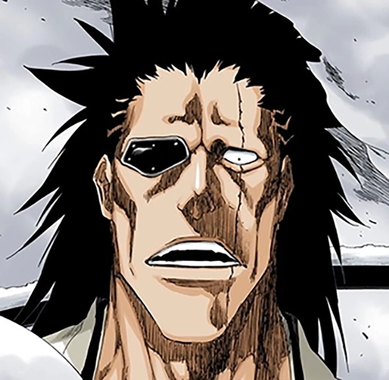
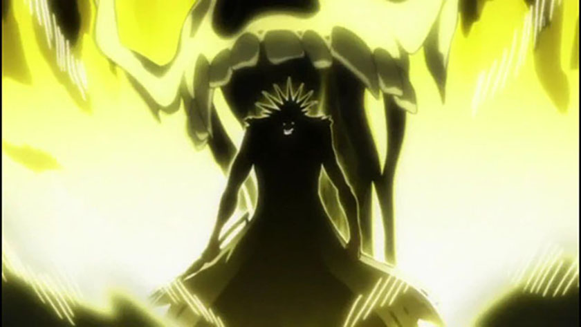
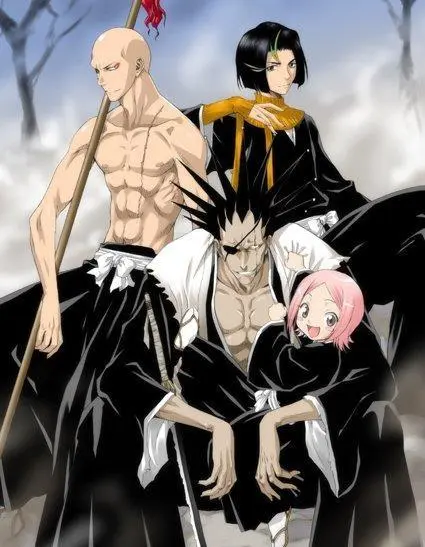

Lives for the thrill of battle.
Kenpachi Zarkai is one of the strongest characters in the anime/manga bleach. His name itself "Kenpachi" is a title given to the one who loves battle and has killed the most people. He only lives to fight and not even with much of a purpose other than he loves battle more than anything. This passion for fighting is so strong that he will adapt his ability level to the person he is fighting, so that the battle is more enjoyable. When fighting it is almost like he doesnt feel pain when injured and he is always smiling during battle.
His abilities are not really like anyone else in Bleach. He purely uses his own innate ability, brute strength and reflexes whearas most of the characters in Bleach fight alongside their sword spirit or "zanpakuto". His overwhelming strength allows him to still be one of the strongest characters despite him limiting his own powers.
Kenpachi is known as one of the strongest soul reapers and for only talking about battle most of the time. He is always looking for a good fight and has many quotes and feats that result from these battles, as well as his love for fighting.
The reason him beating three quincy during the first quincy invasion is a big deal is because he was basically the only one to defeat any of them and even many of his fellow Captains fell or where gravely injured in battle. The second feat, beating these two arrancar is important because they are just as strong as captains and specifically yammy was the highest ranked out of all the arrancars. Last but not least beating two of his fellow captains by himself is a big deal because they have the same rank as him yet their power is far apart. Also he beat them both even despite them using their ultimate ablity or bankai while just using brute strength and reflexes. This feat is even more impressive because Kaname's bankai cuts off all of the senses yet Kenpachi beat him just out of pure reflex.
Kenpachi's ascociates mostly include people who he respects from fighting or people who enjoy battle as much as him. Such as his squade members. He is the Captain of Squad 11 which is solely comprised of those that live for battle.
